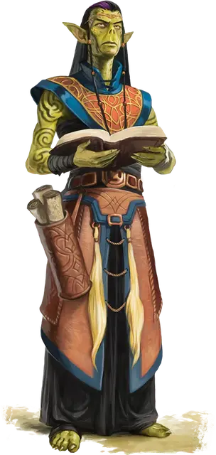

Гитцерай объединитель
Githzerai Uniter
Средняя Аберрация (Гит)

Класс Доспеха 16 (псионическая защита)
Хиты 123 (19к8 + 38)
Скорость 40 футов
| мод | спас | ||
|---|---|---|---|
| СИЛ | 13 | +1 | +4 |
| ЛОВ | 17 | +3 | +6 |
| ТЕЛ | 15 | +2 | +2 |
| мод | спас | ||
|---|---|---|---|
| ИНТ | 15 | +2 | +5 |
| МДР | 17 | +3 | +6 |
| ХАР | 16 | +3 | +3 |
Навыки Восприятие +6, Проницательность +6
Чувства пассивное Восприятие 16
Языки Общий, Гитский
Опасность 7 (2900 опыта)
Бонус мастерства +3
Особенности
Психическая защита. Пока гитцерай не носит броню и не носит щит, к его КД добавляется модификатор Мудрости.
Действия
Мультиатака. Гитцерай совершает три Безоружные атаки или Псионическим снарядом. Он может заменить любую из этих атак одним использованием Умиротворяющего прикосновения.
Безоружная атака. . Рукопашная атака оружием: +6 к попаданию, досягаемость 5 футов, одна цель. Попадание: 7 (1к8 + 3) дробящего урона плюс 10 (3к6) урона психической энергией.
Псионический снаряд. . Дальнобойная атака заклинанием: +6 к попаданию, дистанция 60 футов, одна цель. Попадание: 17 (5к6) урона психической энергией.
Умиротворяющее прикосновение. Гитцерай прикасается к одному существу, которое он может видеть в пределах 5 футов. Цель должна преуспеть в спасброске Интеллекта Сл 14, иначе гитцерай выбирает действие этой цели: Атака, Накладывание заклинания или Рывок. Пораженная цель не может совершать это действие в течение 1 минуты. В конце каждого своего хода она может повторять спасбросок, оканчивая действие этого эффекта в случае успеха. Цель, преуспевшая в спасброске, становится невосприимчивой к Умиротворяющему прикосновению этого гитцерая на 24 часа.
Использование заклинаний (Псионика). Гитцерай накладывает одно из следующих заклинаний, используя Мудрость в качестве базовой характеристики и без использования материальных компонентов (Сл спасброска от заклинаний 14):
• Неограниченно: волшебная рука [mage hand] (рука невидима), видение невидимого [see invisibility];
• 1/день каждое: уход в иной мир [plane shift] (только на себя), телекинез [telekinesis];
Описание
Гитцераи объединители исповедуют мудрость и единство, а не насилие. Многие объединители являются членами Ша'сал-Хоу, группы гитъянки и гитцераев, объединённых для воссоединения народ гит. Способные мастера боевых искусств, объединители склонны скорее разоружать и усмирять своих противников, нежели уничтожать их.
ГИтЦЕРАИ
Гитцераи происходят от древнего народа, который также был прародителями гитьянки — все они были уничтожены или преобразованы свежевателями разума. Многие гитцераи обитают в Лимбо, оттачивая свои псионические способности, создавая свои дома на этом плане полном хаоса. Гитцераи, описанные здесь, часто пересекают планы, переходя между ними через порталы в Сигиле и Внешних землях. Чтобы узнать больше о других гитцераях, ознакомьтесь с "Бестиарием".